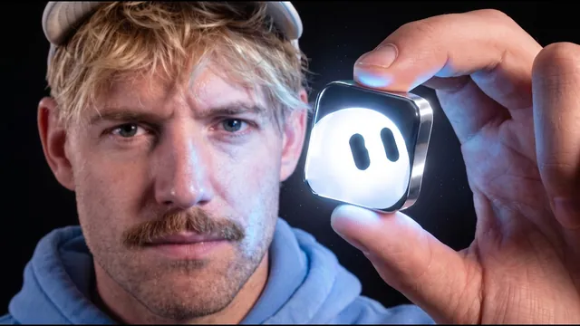

20달러 Grok Bot이 10배 좋아졌다… 저 그만할게요

원본 영상 보기 →
- API가 없다는 게 더 이상 자동화의 벽이 아니에요
- 가져오는 것보다 해석이 돈이 됩니다
- 설명 대신 보여주는 방식으로 업무를 넘깁니다
한 줄 요약
Jack Roberts가 비용이 70% 저렴해지고 새 기능이 붙은 GrokBot을 실제 업무 사례 5가지로 테스트했어요. API 없는 서비스 연결, 데이터 분석, 음성 대화, 다른 앱 대신 조작하기, 화면 녹화로 작업 가르치기까지 다룹니다. (이 영상은 xAI의 후원을 받았고, 테스트는 직접 한 것이라고 밝혔어요.)
전체 내용 정리
설정 없이 대화만으로 쓰는 'AI 직원 팀'이에요
Jack Roberts는 GrokBot을 지금까지 써 본 것 중 가장 쉬운 AI 도구로 꼽습니다. 24시간 쉬지 않고 일하는 에이전트를 만들 수 있고, 최근 비용이 70% 저렴해진 데다 쓰는 방식을 바꿀 만한 새 기능도 들어왔다고 해요.
API 설정이 필요 없고 클릭 한 번이면 설치가 끝납니다. 대화만 하면 바로 작동하고요.
봇마다 업무를 하나씩 맡길 수 있어서 'AI 직원'처럼 쓸 수 있고, 이 직원들끼리 서로 소통하게 만들 수도 있어요.
사례 1: API가 없는 서비스에도 연결됩니다
GrokBot은 대부분의 서비스에 쉽게 연결되는데, 문제는 공식 API가 없는 서비스죠.
Jack은 두 곳을 테스트했어요. API로는 원하는 분석을 가져올 수 없는 YouTube, 그리고 자기가 운영하는 학교 커뮤니티입니다. 프롬프트는 간단했어요. YouTube에서는 GrokBot 영상으로 구독자가 몇 명 늘었는지, 커뮤니티에서는 마지막으로 가입한 사람이 누구인지 알려 달라고 했습니다.
GrokBot은 "YouTube 스튜디오가 Google 로그인으로 원 패스워드 확인을 요구한다"고 되물었어요. 자격 증명은 채팅창에 바로 입력하되 GrokBot조차 내용을 볼 수 없게 안전하게 저장된다고 설명합니다.
이메일을 입력하자 단계별로 안내해 줬고, 곧 YouTube 스튜디오에 접속해 GrokBot 영상의 신규 구독자 211명을 가져왔어요. API가 없는 서비스라도 연결할 수 있다는 뜻입니다. 휴대폰으로 메시지를 보내 요청할 수도 있고요.
사례 2: 가져온 데이터로 제안까지 받아요
데이터를 가져오는 건 과정일 뿐이에요. 중요한 건 시간을 아끼고 돈을 벌어다 주는 거라고 Jack은 강조합니다.
예를 들어 "내 마지막 GrokBot 영상 성과를 분석해서 두 번째 영상을 만들 때 시청자에게 도움이 될 만한 인사이트를 알려 줘"라고 요청할 수 있어요. 여러 성과 데이터를 바탕으로 새 데이터를 만들고 표로 정리해 달라고 할 수도 있고요. 전에는 불가능했던 수준의 분석이 가능해진 겁니다.
Jack이 "데이터 포인트 세 가지와 인사이트를 줘"라고 하자, 추천 영상 CTR이 6만 회 노출 기준 평균 4.8%라는 수치와 함께 다음 영상에서 무엇을 해야 할지 설명해 줬어요. 화면에 보인 데이터는 공개용으로 임의로 섞은 거라고 덧붙입니다.
사례 3: 음성으로 실시간 대화합니다
새 음성 대화 기능을 쓰려면 먼저 상단의 Grok 메뉴에서 업데이트 확인을 눌러 최신 버전을 받고, 하단 섹션의 작은 버튼을 누르면 돼요.
Jack이 말을 걸자 파트너십·거래 업무를 맡은 에이전트가 응답했습니다. 음소거도 되고, Helix나 Atlas 같은 목소리 중에서 고를 수 있어요. Leora는 이미 비서실장(Chief of Staff) 에이전트가 쓰고 있어서, 에이전트마다 고유한 목소리를 갖는 구조였습니다. 말하는 속도도 1.5배속으로 올릴 수 있고요.
Jack은 다른 페이지에 가 있는 상태에서 Atlas에게 메일함에서 파트너십 관련 메일을 찾아 달라고 했고, 에이전트가 바로 검색을 시작했어요. 인터넷을 돌아다니면서 동시에 실시간으로 대화할 수 있다는 점이 가장 마음에 든다고 합니다. 최상의 결과를 얻으려면 'Chief of Staff' 에이전트와 대화하라고 권해요.
사례 4: 다른 앱을 대신 조작하는 중앙 통제 센터
GrokBot에게 다른 앱이나 시스템에서 하는 작업을 대신 시킬 수 있어요.
Jack은 "Claude Design에 접속해서 로그인하고, 내 스피치 테크 스타트업 'Glyder' 프레젠테이션을 위한 멋진 그래픽을 디자인해 줘"라고 요청한 뒤 화면 제어권을 넘기고 손을 뗐습니다.
GrokBot은 실제로 소프트웨어를 직접 조작했고, 링크를 달라고 하자 결과 링크를 건네줬어요. 열어 보니 Grok이 Claude에 "아름다운 투자 자료를 만들어 줘"라는 프롬프트를 직접 입력해 뒀습니다. Jack은 자기가 썼다면 나오지 않았을 프롬프트라고 평가해요.
같은 브랜드 팔레트로 원하는 결과물을 만들어 돌아오게 할 수 있으니, Grok이 모든 도구를 잇는 중앙 센터 역할을 하게 되는 거죠. Jack은 투자 규모와 데이터 센터, Grok 5까지의 로드맵을 근거로 2027년 말까지 Grok이 세계 최고의 프런티어 모델이 될 거라고 개인적으로 전망합니다.
사례 5: 화면 녹화로 가르치면 따라 해요
Jack이 가장 멋지다고 꼽은 기능은 '작업 학습 시키기(Teach a task)'입니다. 대부분 이런 기능이 있는지도 모르는데, 화면 녹화로 어떤 작업이든 보여 주면 Grok이 학습해서 직접 수행해요.
방법은 간단합니다. Grok 바에서 컴퓨터 아이콘을 누르면 상단에 '작업 학습 시키기'가 보이고, 이걸 누른 뒤 평소처럼 작업하면 돼요.
예로 든 건 YouTube 댓글에 답글 달기입니다. 댓글에 어떻게 답하는지 직접 보여 주는 식으로 가르쳐요. YouTube에서 여러 영상을 찾아 스프레드시트에 추가하는 정보 수집 작업도 가르칠 수 있고요. 끝나면 '중지'를 누르면 됩니다. 오디오를 녹음하는 게 아니라 사용자의 행동을 따라 배우는 방식이에요.
결국 무엇을 맡길지 정하는 게 핵심이에요
GrokBot은 쓸수록 똑똑해지고, 팀처럼 에이전트끼리 서로 소통하게 됩니다.
Jack은 중요한 건 어떤 업무를 해결할지 고민하고 그걸 GrokBot에게 맡기는 것이라며, 이루고 싶은 게 있으면 직접 시도해서 이 모델이 어디까지 되는지 확인해 보라고 권해요. 다음 질문으로 이 에이전트들을 위한 최적의 구성이 무엇인지를 예고하며 마무리합니다.
핵심 인사이트
- API가 없다는 게 더 이상 자동화의 벽이 아니에요: GrokBot은 로그인만 거치면 API 없는 서비스에서도 데이터를 가져옵니다. "우리 쓰는 프로그램은 연동이 안 돼서"라는 이유로 포기했던 업무를 다시 볼 만한 이유죠.
- 가져오는 것보다 해석이 돈이 됩니다: 데이터를 모으는 건 과정일 뿐이고, 그걸로 "다음에 뭘 해야 하는지"까지 제안받을 때 시간 절약과 수익으로 이어져요.
- 설명 대신 보여주는 방식으로 업무를 넘깁니다: '작업 학습 시키기'는 화면 녹화로 작업을 보여 주면 AI가 따라 해요. 업무 매뉴얼을 글로 정리하지 않아도 반복 작업을 위임할 수 있는 길이 열린 겁니다.
오늘 당장 해볼 것
- 매주 같은 프로그램에 로그인해서 숫자를 옮겨 적는 업무를 하나 골라 적어 두세요. 예약 건수든 신규 문의 수든요. API 연동이 안 된다는 이유로 미뤄 둔 업무가 첫 후보입니다.
- 그 업무를 평소처럼 하면서 화면 녹화를 한 번 떠 두세요. "보여 주고 가르치는" 방식으로 위임할 때 그대로 쓸 수 있는 자료가 됩니다.
- 모은 데이터를 AI에 넣고 "데이터 포인트 세 가지와 다음에 해야 할 일을 알려 줘"라고 물어보세요. 숫자 정리를 넘어 제안까지 받는 게 진짜 가치예요.